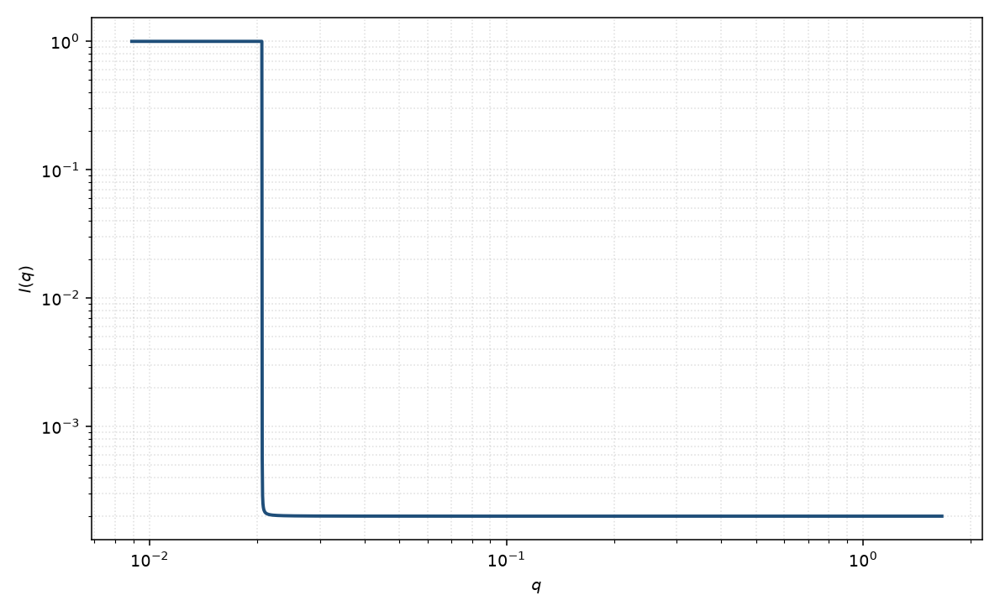

无规相近似
RPA
适用场景
聚合物共混或熔体的浓度涨落在平均场下用 de Gennes 无规相近似（RPA）。$S(q)$ 由 Debye 函数与 Flory–Huggins $\chi$ 构成；趋近旋节时 $S(0)$ 发散。
嵌段共聚物有 Leibler 峰，本页只写共混均聚物的 de Gennes 式。已经相分离成畴时改用 TS、层状或几何模型。
物理图像
RPA 把理想链的 Debye 响应加上平均场相互作用：$\chi$ 越大，长波涨落越强。$S^{-1}(q)=[\phi N g_D]^{-1}+[(1-\phi)N g_D]^{-1}-2\chi$。
这是结构因子语言，不是粒子外形。取向在各向同性熔体中平凡；外场取向的链要用各向异性 Debye。
示意图

核心公式
出发点
不可压缩二元均聚物熔体的浓度响应：每组份先当作理想高斯链（Debye 函数 $g_D$），再用平均场 Flory–Huggins $\chi$ 把两组份耦合并减去。这是 de Gennes 无规相近似，给出结构因子 $S(q)$ 而不是粒子外形。
推导
理想链对浓度的响应是 $\phi N g_D(q R_g)$，其中 $g_D=P_{\mathrm{Debye}}=2(\mathrm{e}^{-x}-1+x)/x^2$、$x=q^2 R_g^2$。RPA 逆加接触相互作用 $-2\chi$ 与不可压缩（两组份浓度相反）。二元标量结构因子满足
$$\frac{1}{S(q)}=\frac{1}{\phi N g_D(q R_g)}+\frac{1}{(1-\phi) N g_D(q R_g)}-2\chi.$$观测 $I(q)\propto(\Delta\rho)^2 S(q)+B$。$\chi=0$ 时 $S$ 回到两组 Debye 的并联；$\chi$ 增大则长波涨落增强。旋节 $\chi_s$ 使 $S(0)\to\infty$：
$$\chi_s=\frac{1}{2}\left(\frac{1}{\phi N}+\frac{1}{(1-\phi)N}\right).$$低 $q$ 与渐近
低 $q$：$g_D\to 1$，$S(0)$ 由 $\chi_s-\chi$ 决定，趋近旋节时发散，这是随后 Cahn 动力学的起点。高 $q$：$g_D\sim 2/(q^2 R_g^2)$，$S(q)$ 回到链的 $q^{-2}$，相互作用变得不重要。已经出现畴峰时应离开均聚物 RPA，改用 Leibler 嵌段式或 Teubner–Strey。
参数表
| 参数 | 符号 | 含义 | 单位 | 典型范围 |
|---|---|---|---|---|
| 回转半径 | $R_g$ | 链的 Debye $R_g$ | Å | 熔体链尺寸 |
| 聚合度 | $N$ | 有效段数 | 无量纲 | 与 $R_g$ 相关 |
| 体积分数 | $\phi$ | 其中一组份 | 无量纲 | $0.1$–$0.9$ |
| 相互作用 | $\chi$ | Flory–Huggins 参数 | 无量纲 | 近旋节时接近 $\chi_s$ |
| 标度 / 本底 | $\mathrm{scale}$, $B$ | 前置因子与常数本底 | 与强度单位一致 | 实验相关 |
拟合注意
取向：各向同性 RPA 不含量纲取向角。流动会使 $g_D$ 各向异性。
多分散 $N$ 改变 $S(0)$ 与旋节位置，须声明是何种平均。磁性标记共混：磁 $\Delta\rho$ 只进入幅度，除非两组份磁化率不同。
可辨识性：$\chi$ 与 $N$、本底、绝对标定强相关。没有绝对强度时只能谈 $S(q)/S(0)$ 的形状。已经出现畴峰时不要继续用均聚物 RPA。
相近模型
- 旋节分解 — RPA 的 $S(0)$ 发散之后的动力学。
- 单分散高斯链 — $\chi=0$ 时 $S(q)$ 回到 Debye。
- Teubner–Strey — 已经相分离的双连续畴。
参考文献
- de Gennes, P.-G. Scaling Concepts in Polymer Physics. Cornell University Press: Ithaca, 1979.
- de Gennes, P.-G. Theory of X-ray scattering by liquid macromolecules with heavy atom labels. J. Phys. (Paris) 1970, 31, 235–238. DOI: 10.1051/jphys:01970003102-3023500